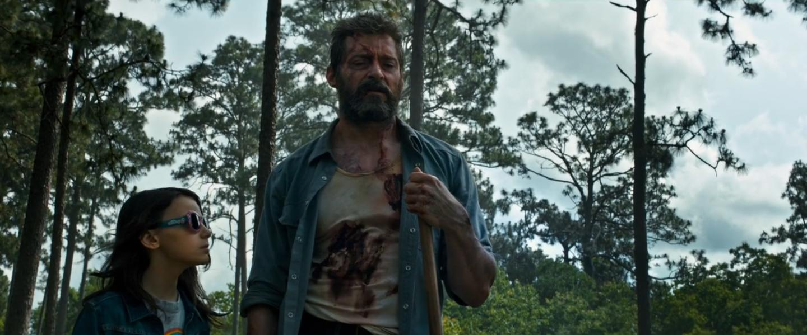

Logan: 02 de Março nos Cinemas
Acompanhe a útima jornada do Wolverine
Logan é o último filme de Hugh Jackman no papel de Wolverine. Ele se passa anos depois dos filmes dos X-Men e mostra Logan encontrando X-23 (Dafne Keen), uma garota com poderes semelhantes ao dele. James Mangold é o diretor e Patrick Stewart retornará como Professor Xavier. O longa chega aos cinemas em 2 de março.